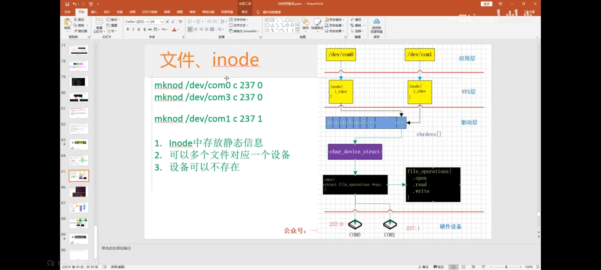

虚拟文件系统
- VFS
-
virtual file system，虚拟文件系统。

Figure 1. vfs
Figure 2. 硬盘分区
根目录
$ ls -lh /
dr-xr-xr-x. 5 root root 4.0K Sep 9 16:14 boot
drwxr-xr-x. 20 root root 3.1K Sep 10 00:14 dev
drwxr-xr-x. 82 root root 8.0K Sep 10 06:19 etc
drwxr-xr-x. 2 root root 6 Apr 11 2018 home
lrwxrwxrwx. 1 root root 7 Jan 21 2021 lib -> usr/lib
lrwxrwxrwx. 1 root root 9 Jan 21 2021 lib64 -> usr/lib64
drwxr-xr-x. 2 root root 6 Apr 11 2018 media
drwxr-xr-x. 2 root root 6 Apr 11 2018 mnt
drwxr-xr-x. 2 root root 6 Apr 11 2018 opt
dr-xr-xr-x. 111 root root 0 Sep 9 16:14 proc
dr-xr-x---. 18 root root 4.0K Sep 10 00:03 root
drwxr-xr-x. 25 root root 720 Sep 10 06:19 run
lrwxrwxrwx. 1 root root 8 Jan 21 2021 sbin -> usr/sbin
drwxr-xr-x. 2 root root 6 Apr 11 2018 srv
dr-xr-xr-x. 13 root root 0 Sep 10 00:14 sys
drwxrwxrwt. 10 root root 20K Sep 10 05:53 tmp
drwxr-xr-x. 13 root root 155 Jan 21 2021 usr
drwxr-xr-x. 19 root root 267 Jan 21 2021 var文件类型
- -
-
普通文件，文本、图片、可执行。
- d
-
目录。
- c
-
字符设备，当前读取，例如：流、键盘。
- b
-
块设备，随机读取，例如：硬盘、内存。
- p
-
pipeline，管道。
- s
-
socket，套接字。
- l
-
链接。
- [eventpoll]
-
eventpoll 。
df
# disk file，磁盘文件
$ df -h
Filesystem Size Used Avail Use% Mounted on
devtmpfs 1.9G 0 1.9G 0% /dev
tmpfs 1.9G 0 1.9G 0% /dev/shm
tmpfs 1.9G 8.6M 1.9G 1% /run
tmpfs 1.9G 0 1.9G 0% /sys/fs/cgroup
/dev/mapper/centos-root 6.2G 5.5G 705M 89% /
/dev/sda1 1014M 181M 834M 18% /boot
tmpfs 379M 0 379M 0% /run/user/0文件系统名称 /dev/sda1 是怎么来的？
参考：
1. 手动挂载分区
# 创建一个被 0 填充的 100M 镜像
$ dd \(1)
if=/dev/zero \(2)
of=mydisk.img \(3)
bs=1048576 \(4)
count=100 (5)
100+0 records in
100+0 records out
104857600 bytes (105 MB) copied, 0.0345331 s, 3.0 GB/s
$ ls -lh mydisk.img
-rw-r--r--. 1 root root 100M Sep 10 08:53 mydisk.img
# 挂载到环回接口
$ losetup /dev/loop0 mydisk.img
$ ls -l /dev/loop0
brw-rw----. 1 root disk 7, 0 Sep 10 09:00 /dev/loop0
# 格式化磁盘
$ mke2fs mydisk.img
$ mkdir mydisk
# 挂载磁盘
$ mount -t ext2 /dev/loop0 mydisk
$ df -h
Filesystem Size Used Avail Use% Mounted on
devtmpfs 1.9G 0 1.9G 0% /dev
tmpfs 1.9G 4.0K 1.9G 1% /dev/shm
tmpfs 1.9G 8.6M 1.9G 1% /run
tmpfs 1.9G 0 1.9G 0% /sys/fs/cgroup
/dev/mapper/centos-root 6.2G 5.6G 701M 89% /
tmpfs 379M 0 379M 0% /run/user/0
/dev/sda1 1014M 181M 834M 18% /boot
/dev/loop0 97M 1.6M 91M 2% /root/mydisk| 1 | device driver，设备驱动 |
| 2 | input file，输入文件，/dev/zero 表示 0 |
| 3 | output file，输出文件 |
| 4 | block size，块设备 |
| 5 | 数目 |
参考：